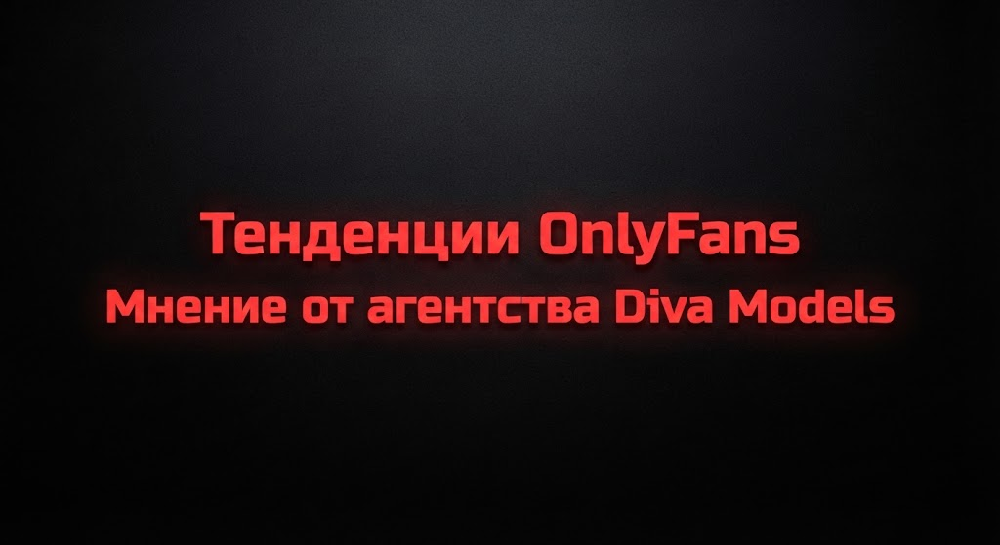
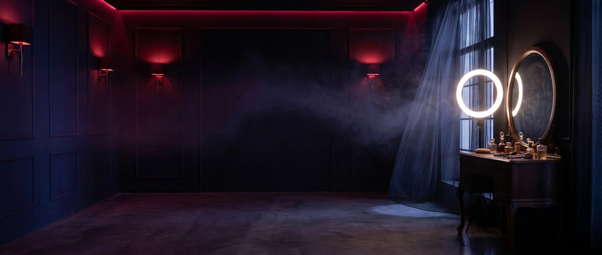

Что OnlyFans-агентство делает каждый день, почему модель получает 20–30% от gross и как проходит старт за 7–14 дней: 10 честных ответов менеджера Diva Models. 18+.
Как устроено OnlyFans-агентство изнутри? Короткий ответ: это слаженная команда, которая ежедневно берёт на себя управление трафиком, круглосуточное общение с поклонниками (24/7), формирование контент-плана и финансовый учет страницы, пока модель полностью сосредоточена на съёмках. Мы собрали 10 ключевых вопросов, которые девушки чаще всего задают менеджеру Diva Models в первые дни общения, и ответили на них так же прямо и с реальными цифрами, как делаем это в личной переписке. Остались вопросы? Наш менеджер в Telegram готов ответить на них прямо сейчас.
Что агентство делает каждый день?
Ежедневно команда Diva Models параллельно курирует четыре ключевых процесса: привлечение целевого трафика (Reddit, X, TikTok), активные продажи в диалогах с фанами 24/7, составление контент-плана и глубокую аналитику показателей страницы. В нашей компании за каждым направлением строго закреплены отдельные специалисты — опытный маркетолог, профессиональные чаттеры и личный менеджер, а за моделью остается только создание контента.
Рабочий день команды адаптирован под часовые пояса платежеспособной аудитории: американский прайм-тайм приходится на нашу ночь, поэтому чаттеры работают поочередно в несколько смен. Утром менеджер детально анализирует ночную статистику (какие сообщения сработали лучше всего и что чаще покупали), днем публикуются промо-посты и утверждаются задачи по съёмкам, а к вечеру начинается основной пик продаж в чатах. Доступ к балансу и статистике аккаунта у модели открыт в любое время.
Сколько получает модель и почему именно 20–30%?
Модель получает 20–30% от gross-баланса страницы — итоговый процент определяется стратегией развития, типажем и рабочей командой. Важно понимать, что остальная часть — это не чистая прибыль Diva Models: из неё выплачиваются расходы на закупку трафика, зарплаты круглосуточной чат-команды и менеджмента, а значительная доля реинвестируется обратно в продвижение страницы (без регулярного реинвестирования доход быстро прекращает расти).
Нагляднее считать доход не в процентах, а в реальных суммах на вашей карте. Согласно официальным правилам платформы, OnlyFans удерживает 20% комиссионных. Из оставшейся доли агентство покрывает расходы на маркетинг, чаттеров и администрирование — в итоге после всех выплат чистый доход агентства сопоставим с выслугой самой модели. Справедливое сравнение выглядит так: 25% от крупного баланса, который постоянно увеличивается усилиями целой команды, уже через полгода приносят значительно больше, чем 100% от работы в одиночку на стоящем на месте аккаунте.
| Этап | Gross-баланс страницы в месяц |
|---|---|
| 1-й месяц — запуск | $500–1 000 на руки модели |
| 2–3 месяца — разгон трафика | $1 500–3 000 |
| 4–6 месяцев — стабильная система | $3 000–5 000 |
| Топ-страницы агентства | $15 000–50 000 |

Типажи моделей OnlyFans: как выбрать свою нишу
Разбор популярных типажей, ниш и образов, которые приносят наибольший доход и отклики подписчиков.
Читать статью →Как быстро я начну зарабатывать?
От отправки заявки до полноценного запуска страницы проходит всего от 7 до 14 дней: вводная консультация, создание и верификация профиля, подготовка первого контента, подключение чат-команды и запуск рекламного трафика. Первые продажи обычно происходят в течение первого месяца, когда модель получает на руки около $500–1 000. На показатель стабильных $3 000–5 000 gross аккаунт выходит за 3–6 месяцев системной работы.
Мы всегда честно предупреждаем на консультации: приведенные цифры — это ориентиры, а не гарантия. Скорость роста зависит от выбранной ниши, типажа и регулярности предоставления контента — гарантировать точные суммы в этой сфере не может никто. Но что Diva Models гарантирует на 100%, так это ежедневный объем работы: трафик, продажи в чатах и аналитика продвигаются непрерывно, независимо от выходных или настроения.
У меня нет опыта. Это проблема?
Нет, абсолютно. Большинство моделей Diva Models начинают свой путь с нуля — не имея опыта съёмок, стартовой аудитории или знания английского языка. Пошаговое обучение уже включено в процесс запуска: за первые 10–14 дней команда подробнейшим образом объясняет, что и как снимать, и подбирает референсы под ваш типаж, а все диалоги с фанами ведут профессиональные чаттеры. Из техники вам потребуется лишь смартфон с хорошей камерой.
Вместо прошлого опыта критически важны три условия: вам исполнилось 18 лет, у вас есть 10–15 часов в неделю для создания контента и вы готовы следовать рекомендациям нашей команды (съёмка по подготовленным референсам дает результаты гораздо быстрее, чем интуитивный подход). Все остальные навыки — свет, выгодные ракурсы и форматы — легко нарабатываются в первые недели.
Кто ведёт аккаунт и переписку?
Администрирование аккаунта полностью берет на себя агентство Diva Models: мы регистрируем и верифицируем профиль на ваши документы, настраиваем удобные платежные системы (Paxum, Skrill) и контролируем своевременность выплат по четкому графику. Все диалоги с подписчиками на английском языке круглосуточно ведут чаттеры, при этом у вас сохраняется полный доступ к аккаунту без ограничений.
Почему система устроена именно так: монетизация в личных сообщениях — это полноценная профессия, требующая работы со скриптами, ночных смен и навыков взаимодействия с «китами» (фанами, генерирующими основную выручку). Подписчики из США и Европы наиболее активны, когда в нашем часовом поясе ночь, а диалог, оставшийся без ответа на 8 часов — это упущенный заказ на кастомный контент. Команда полностью решает эту задачу, а модель взаимодействует напрямую только с одним человеком — своим личным менеджером.
Что будет на первом созвоне?
Первичный созвон с менеджером Diva Models — это комфортное знакомство и кастинг на 30–60 минут, а не строгий экзамен. Специалист детально разберет ваш типаж, подберет удобные форматы контента, обсудит план запуска, размер процента и график выплат — все нюансы проговариваются максимально прозрачно до принятия решений. У нас нет правила «решай прямо сейчас»: взять время на размышления и вернуться с вопросами — абсолютно нормальный и рабочий процесс.
Как подготовиться: сделайте 2–3 свежих фото на обычную камеру телефона, открыто расскажите о своих границах (какие форматы для вас приемлемы, а какие табу) и подготовьте список любых волнующих вопросов. Все зафиксированные рамки становятся главным ориентиром: команда выстраивает контент-план исключительно внутри ваших личных границ.
Вся правда про OnlyFans: развеиваем мифы и страхи

Подберём агентство, в котором вам будет безопасно и выгодно
Оставьте заявку — мы разберём вашу ситуацию, ответим на вопросы и предложим несколько проверенных вариантов на выбор. Без обязательств.